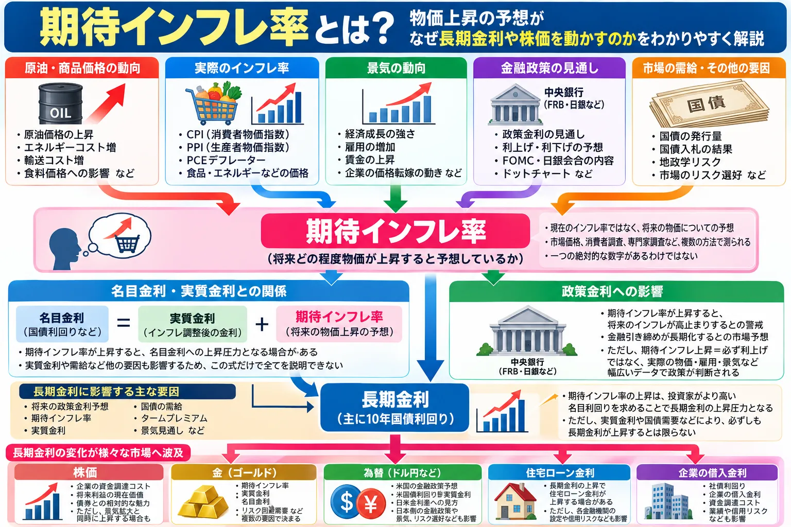

期待インフレ率とは？物価上昇の予想がなぜ長期金利や株価を動かすの？初心者向けに解説

金融ニュースでは「期待インフレが上昇」「インフレ期待が低下」「10年BEIが上昇」といった表現が登場します。 期待インフレ率は、現在の物価上昇率ではなく、将来の物価について人々や市場がどのように予想しているかを見る考え方です。
この期待の変化は、実質金利や金融政策予想、国債利回りなどを通じて、株価・金（ゴールド）・為替にも影響する場合があります。 この記事では、期待インフレ率の基本からBEI、長期金利との関係まで順番に整理します。
期待インフレ率とは？
期待インフレ率とは、人々や市場参加者が将来どの程度物価が上昇すると予想しているかを示す考え方です。
重要なのは、現在の物価上昇率そのものではないことです。 例えば現在のインフレ率が高くても、市場が「この物価上昇は一時的で、数年後には落ち着く」と考えていれば、中長期の期待インフレ率が同じように上昇するとは限りません。
期待インフレ率は一つの数字ではない
期待インフレを測る方法には、大きく分けて次のようなものがあります。
- 市場価格から推測する方法：国債やTIPSなどの価格・利回りを利用
- 消費者への調査：家計が今後の物価をどう予想しているかを質問
- 専門家への調査：エコノミストなどの予想を集計
対象者や予想期間、算出方法が異なるため、 「期待インフレ率」という一つの絶対的な数字が存在するわけではありません。
CPIと期待インフレ率は何が違う？
CPI（消費者物価指数）と期待インフレ率は、どちらも物価に関係しますが、見ている時間軸が異なります。
| 項目 | 意味 |
|---|---|
| CPI | 実際に観測された消費者物価の変化 |
| 期待インフレ率 | 将来の物価上昇についての予想 |
例えばCPIが市場予想を上回り、高いインフレ率が続いていることが確認されると、次のような見方が広がる場合があります。
CPIが高い
↓
「今後もインフレが続くのでは」との見方
↓
期待インフレ率が上昇する場合
ただし、「CPI上昇＝必ず期待インフレ率上昇」ではありません。 市場が物価上昇を一時的と判断した場合や、将来の景気減速によってインフレが落ち着くと予想した場合には、現在のCPIと中長期の期待インフレが異なる方向へ動くこともあります。
なぜ「予想」だけで金融市場が動くの？
金融市場では、現在の状況だけではなく、これから景気・物価・金融政策がどうなるのかを先回りして価格へ反映しようとする動きがあります。
そのため、実際のインフレ率がまだ変化していなくても、将来の物価に対する見方が変わるだけで国債・株式・為替などが反応することがあります。
原油価格上昇
↓
将来の物価上昇への警戒
↓
期待インフレ率上昇
↓
金融政策や長期金利への予想が変化
↓
債券・株・為替などが反応
「予想と実際の結果の差」が市場を動かす仕組みについては、 「市場予想とは？」でも解説しています。
期待インフレ率はどうやって確認する？
期待インフレを確認する代表的な方法には、次のようなものがあります。
| 種類 | 例 | 特徴 |
|---|---|---|
| 市場ベース | ブレークイーブン・インフレ率（BEI） | 名目国債とTIPSの利回りなど、市場価格を利用 |
| 消費者調査 | ニューヨーク連銀のSurvey of Consumer Expectationsなど | 家計が予想する将来の物価上昇を調査 |
| 消費者調査 | ミシガン大学の消費者調査など | 短期・長期のインフレ予想を質問 |
| 専門家調査 | エコノミスト・市場参加者などへの調査 | 専門家の経済見通しを集計 |
同じ「期待インフレ」でも、誰に聞いた数字なのか、市場価格から計算した数字なのか、何年先を対象にしているのかが異なります。 異なる指標を単純に横並びで比較しないことが重要です。
ブレークイーブン・インフレ率（BEI）とは？
ブレークイーブン・インフレ率（BEI）は、市場ベースのインフレ補償を見る代表的な指標です。
米国では、通常の米国債である名目国債と、元本などが物価に連動するTIPS（米国物価連動国債）の利回りを比較して考えます。
概念的には、同程度の満期で次のような関係になります。
名目国債利回り − TIPS実質利回り
≒ ブレークイーブン・インフレ率
架空の例
| 10年名目国債利回り | 4.0％ |
|---|---|
| 10年TIPS利回り | 1.5％ |
| 差 | 約2.5％ |
この例ではBEIは約2.5％となります。 これは、名目国債とTIPSの収益が同程度になるために必要なインフレ率を考えるための市場指標です。
BEIは「市場が予想するインフレ率」そのもの？
BEIは市場のインフレ期待を見る際によく利用されますが、 「市場参加者が将来のインフレ率を正確に何％と予想しているか」をそのまま表した数字ではありません。
BEIには、期待インフレ以外にも次のような要素が影響します。
- インフレリスクプレミアム
- 名目国債とTIPSの流動性の違い
- 国債とTIPSそれぞれの需給
- その時点の市場環境
FRBの資料でも、ブレークイーブン・インフレ率にはインフレリスクプレミアムや流動性の違いなどが含まれるため、 純粋なインフレ期待そのものとして解釈しないよう注意されています。
したがって、例えば「10年BEIが2.5％だから、市場は今後10年間のインフレ率を正確に2.5％と予想している」と断定するのは適切ではありません。 BEIは、市場ベースの期待インフレやインフレ補償を見るための指標の一つと考えると分かりやすいでしょう。
名目金利・実質金利・期待インフレ率の関係
期待インフレを理解すると、 実質金利と名目金利の関係も理解しやすくなります。
初心者向けに概念を単純化すると、次のように考えることができます。
名目金利
≒
実質金利 ＋ 期待インフレ率
例えば実質金利がほとんど変化していない一方で期待インフレ率が上昇すれば、名目金利には上昇圧力がかかる場合があります。
反対に、名目金利が上昇していても期待インフレ率がそれ以上に上昇すれば、実質金利の動きは名目金利とは異なる可能性があります。
ただし実際の国債利回りには、期間、国債需給、タームプレミアム、流動性なども影響します。 この関係式だけですべての市場金利を説明できるわけではありません。
原油価格が上がるとなぜ期待インフレが注目される？
原油はガソリンや電力、輸送、製造など幅広い分野に関係するため、価格が大きく変化すると物価への影響が意識されます。
原油価格上昇
↓
ガソリン・輸送・エネルギーコストなどへの影響
↓
物価上昇への警戒
↓
将来のインフレ予想へ影響
原油価格と物価の関係は 「原油価格が上がると株価や物価はどうなる？」でも解説しています。
ただし、「原油高＝必ず期待インフレ率上昇」「原油高＝必ず持続的インフレ」ではありません。
エネルギー価格の上昇が一時的なのか、サービス価格や賃金など幅広い分野へ波及するのか、市場が将来の景気をどう見ているのかによって、中長期のインフレ期待への影響は異なります。
期待インフレ率と政策金利の関係
中央銀行にとって、中長期のインフレ期待が安定しているかどうかは金融政策を考える材料の一つです。
米国の金融政策については 「政策金利とは？」と 「FOMCとは？」もあわせて確認すると理解しやすくなります。
期待インフレ率上昇
↓
将来のインフレが高止まりするとの警戒
↓
金融引き締めが長期化するとの市場予想
↓
国債や株式、為替などが反応する場合
ただし、期待インフレが上昇したから中央銀行が必ず利上げするわけではありません。 実際の政策判断では、物価、雇用、景気、金融環境など幅広い情報が考慮されます。
また、FOMC参加者の政策金利見通しについては 「ドットチャートとは？」で解説しています。
期待インフレ率と長期金利の関係
長期金利には、期待インフレだけではなく複数の要因が影響します。
- 将来の政策金利予想
- 実質金利
- 期待インフレ
- 国債の需給
- タームプレミアム
- 景気見通し
期待インフレ率が上昇すると、将来受け取るお金の実質的な価値が低下する可能性が意識され、投資家がより高い名目利回りを求めることで長期金利への上昇圧力になる場合があります。
ただし、実質金利が同時に低下した場合や国債への強い需要が発生した場合など、 期待インフレ率が上昇しても長期金利が必ず上昇するわけではありません。
国債価格と利回りの基本については 「国債とは？」、 市場で債券が取引される仕組みについては 「債券市場とは？」でも解説しています。
期待インフレ率と国債入札・国債需給
長期金利が上昇しているからといって、その原因が期待インフレだけとは限りません。
- 期待インフレ率の上昇
- 実質金利の上昇
- 政策金利予想の変化
- 国債入札の結果
- 国債供給への懸念
- タームプレミアムの変化
例えば期待インフレ率がほとんど変化していなくても、国債の供給増加や入札需要の弱さが意識され、名目国債利回りが上昇する場合があります。
国債入札については 「国債入札とは？」で詳しく解説しています。
「長期金利が上がった」という結果だけでなく、何が金利を押し上げたのかを見ることが重要です。
期待インフレ率と株価の関係
期待インフレ率は、長期金利や金融政策予想を通じて株式市場へ影響する場合があります。
期待インフレ率の変化
↓
長期金利・金融政策への見方が変化
↓
企業の資金調達環境や株式のバリュエーションに影響
↓
株価が反応する場合
特に長期金利や実質金利が上昇すると、将来利益の現在価値や債券との相対的な魅力が意識されることがあります。
しかし、「期待インフレ上昇＝必ず株安」ではありません。 緩やかなインフレ期待の上昇が景気回復や企業売上の拡大期待と同時に起きている場合など、株価の反応は異なる可能性があります。
株価が動く基本的な仕組みについては 「株価はなぜ上下するのか？」でも解説しています。
期待インフレ率と金（ゴールド）の関係
金は「インフレに強い資産」と説明されることがありますが、実際の金価格は期待インフレだけで決まるわけではありません。
例えば期待インフレ率が上昇しても、名目金利も大きく上昇すれば、 実質金利がどのように変化したかによって金価格への影響は異なる可能性があります。
金を見る際には、少なくとも次の材料を組み合わせて考える必要があります。
- 期待インフレ率
- 実質金利
- 名目金利
- ドルの動き
- リスク回避需要
詳しくは「金（ゴールド）とは？」でも解説しています。
期待インフレ率上昇だけを理由に「必ず金価格が上昇する」と判断することはできません。
期待インフレ率とドル円・為替の関係
期待インフレ率そのものが、ドル円の方向を直接決めるわけではありません。 金融政策予想や国債利回りを通じて為替へ波及する場合があります。
期待インフレの変化
↓
金融政策予想
↓
米国債利回り・実質金利
↓
日米金利差などへの見方
↓
為替が反応する場合
ただしドル円には、日本側の政策金利や長期金利、景気、リスク選好、資金フロー、ポジション調整なども影響します。
そのため、「米国の期待インフレ上昇＝必ずドル高・円安」ではありません。
期待インフレが「アンカーされている」とは？
金融ニュースや中央銀行関係者の発言では、「インフレ期待がアンカーされている（anchored）」という表現が使われることがあります。
これは一般に、短期的に物価が大きく変動しても、中長期のインフレ期待が大きく変化せず、比較的安定している状態を表す際に使われます。
例えばエネルギー価格の急騰によって現在のインフレ率や1年先のインフレ期待が上昇しても、5年先やさらに長い期間のインフレ期待が大きく上昇しない場合があります。
中長期のインフレ期待が大きく上振れると、賃金設定や企業の価格設定などを通じて実際のインフレにも影響する可能性があるため、中央銀行は期待インフレの動向も注視します。
期待インフレ率を見るときは期間にも注意
期待インフレのニュースを見るときは、「何年先のインフレを予想した数字なのか」を確認することが重要です。
| 期間 | 注目されやすい材料 |
|---|---|
| 短期 | 原油・ガソリン・食品など足元の価格変化の影響を受けやすい場合がある |
| 中長期 | 金融政策への信認、持続的な物価・賃金動向などがより意識される |
エネルギー価格の上昇で短期的なインフレ期待が上昇しても、中長期の期待まで同じように上昇するとは限りません。
期待インフレ率のニュースを見るときのポイント
- どの期待インフレ指標なのか
- 市場ベースかアンケート調査か
- 何年先のインフレ期待なのか
- CPI・PCEなど実際のインフレ率はどうなっているか
- 原油など商品価格は動いているか
- 名目国債利回りはどう動いたか
- 実質金利はどう動いたか
- 金融政策予想は変化したか
- 株・金・為替はどう反応したか
特にBEIを見る場合は、期待インフレだけでなく流動性やリスクプレミアム、国債需給などが含まれていることを忘れないようにしましょう。
また、長期金利を見る際には イールドカーブの変化も確認すると、短期金利と長期金利のどちらが大きく動いているのかを整理しやすくなります。
「期待インフレ率が上昇した」という情報だけで、市場全体の方向を判断することはできません。
直近の期待インフレ率はどうなっている？
更新：2026年9月28日
米セントルイス連銀のFREDで公表されている市場ベースの指標では、 2026年9月25日時点の5年ブレークイーブン・インフレ率は2.34％、10年ブレークイーブン・インフレ率も2.34％でした。
直近数日では、5年BEIは9月22日の2.32％、23日の2.34％、24日の2.33％、25日の2.34％、 10年BEIは9月22日の2.33％、23日の2.35％、24日の2.33％、25日の2.34％と推移しています。
一方、ニューヨーク連銀が2026年9月8日に公表した8月のSurvey of Consumer Expectationsでは、 消費者のインフレ期待中央値は1年先3.6％、3年先3.2％、5年先3.0％でした。 1年先と5年先は前月から変わらず、3年先は0.1ポイント低下しています。
BEIと消費者調査の数字が異なること自体は不自然ではありません。 BEIは金融市場の価格から算出される市場ベースの指標である一方、ニューヨーク連銀の調査は家計へのアンケートを基にしており、対象者も算出方法も異なります。
また、FRBのTIPS関連資料では、BEIにはインフレリスクプレミアムや名目国債とTIPSの流動性の違いなども含まれるため、 BEIをそのまま純粋な将来インフレ予想と解釈しないことが重要とされています。
期待インフレが動く背景には、実際の物価指標、原油などの商品価格、景気見通し、金融政策予想、市場の需給など複数の要因があります。 一つの材料だけが期待インフレ率を動かしたと断定せず、名目金利や実質金利の動きと合わせて確認することが大切です。
※市場データは日々変化します。このセクションは今後のデータ更新に合わせて更新します。 5年・10年BEIはFederal Reserve Bank of St. Louis（FRED）、消費者インフレ期待はFederal Reserve Bank of New Yorkの公表データを確認しています。
FAQ
期待インフレ率とは何ですか？
人々や市場参加者が、将来どの程度物価が上昇すると予想しているかを表す考え方です。 現在の物価上昇率そのものではありません。
CPIと期待インフレ率は何が違いますか？
CPIは実際に観測された消費者物価の変化です。 期待インフレ率は将来の物価上昇についての予想であり、両者が必ず同じ方向へ動くわけではありません。
期待インフレ率はどこで確認できますか？
市場ベースではBEIなどがあり、米国ではFREDなどで確認できます。 また、ニューヨーク連銀などが消費者のインフレ期待調査を公表しています。
ブレークイーブン・インフレ率（BEI）とは何ですか？
同程度の満期を持つ名目国債とTIPSの利回り差などから算出される、市場ベースのインフレ補償を見る代表的な指標です。
BEIは市場のインフレ予想そのものですか？
純粋なインフレ予想そのものとは限りません。 BEIにはインフレリスクプレミアム、流動性、名目国債とTIPSの需給なども影響します。
期待インフレ率と実質金利はどう関係しますか？
初心者向けには「名目金利 ≒ 実質金利 ＋ 期待インフレ率」という関係で整理できます。 ただし実際の市場金利には需給やリスクプレミアムなども影響します。
原油価格が上がると期待インフレ率も上がりますか？
上昇する場合がありますが、必ずではありません。 原油価格の上昇が一時的なのか、幅広い物価や賃金へ波及するのかなどによって中長期のインフレ期待への影響は異なります。
期待インフレ率が上がると株価は下がりますか？
必ず下がるわけではありません。 長期金利や金融政策予想を通じて株価へ影響する場合がありますが、景気や企業利益など他の要因も同時に作用します。
期待インフレ率が上がると金価格は上がりますか？
必ず上がるわけではありません。 金価格には期待インフレだけでなく、実質金利、名目金利、ドル、リスク回避需要なども影響します。
「インフレ期待がアンカーされている」とはどういう意味ですか？
短期的に物価が変動しても、中長期のインフレ期待が大きく変化せず比較的安定している状態を表す際に使われる表現です。
まとめ
- 期待インフレ率は、将来の物価上昇についての予想
- CPIなど実際に観測されたインフレ率とは異なる
- 期待インフレ率には市場ベース・消費者調査・専門家調査など複数の測定方法がある
- BEIは名目国債とTIPSの利回り差から見る代表的な市場指標
- BEIは純粋なインフレ予想だけを表しているわけではない
- 名目金利・実質金利・期待インフレ率には密接な関係がある
- 原油などの商品価格も期待インフレへ影響する場合がある
- 期待インフレは政策金利予想や長期金利へ影響する場合がある
- 株・金・為替への影響は、実質金利や景気など他の要因との組み合わせで変わる
- ニュースを見るときは「何の期待インフレ指標か」「何年先か」を確認することが重要
期待インフレ率を見るときは、単に「上がった・下がった」だけを見るのではなく、 実際のインフレ率、名目金利、実質金利、金融政策予想、国債需給がそれぞれどう動いているのかを分けて考えると、金融市場のニュースを理解しやすくなります。
関連記事
一般ユーザー目線の体験でおすすめの会社をご紹介

ご利用にあたっての注意事項
本記事は金融・投資に関する一般的な情報提供および金融教育を目的としており、特定の金融商品・銘柄の購入、売却その他の投資行動を推奨するものではありません。
期待インフレ率、金利、国債価格、株価、為替、商品価格などは多くの要因によって変動します。 記事内で紹介した関係が常に同じ形で現れるとは限らず、将来の市場動向を保証するものではありません。
市場データや経済指標は改定される場合があります。 投資判断を行う場合は最新の公式情報や各金融機関の契約締結前交付書面、商品説明書、目論見書等をご確認のうえ、 ご自身の判断と責任で行ってください。